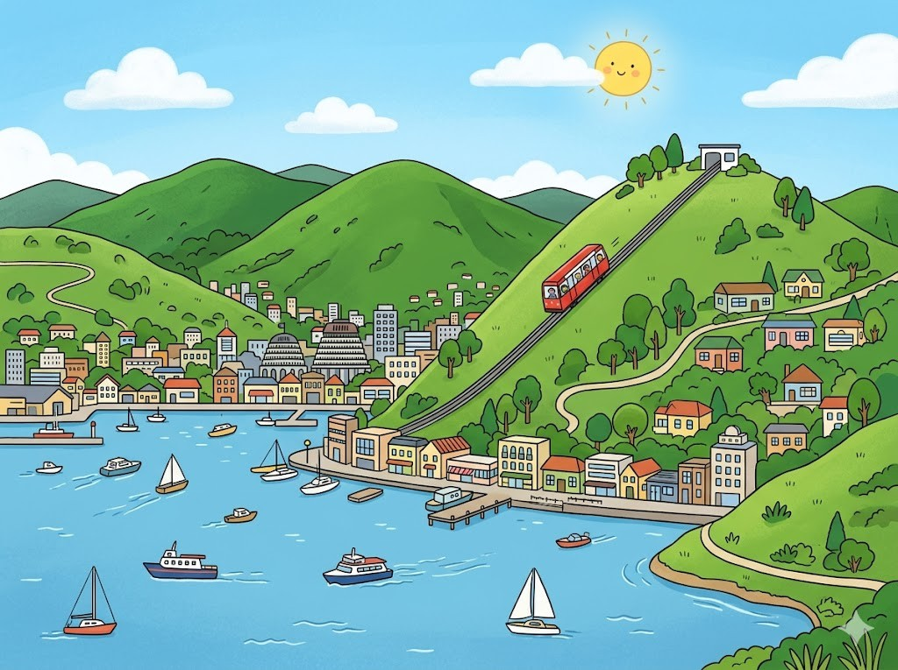
Hier stehen die wichtigsten Daten zu deinem Land. In der App baust du daraus deinen eigenen Steckbrief.
| Hauptstadt | Wellington |
| Kontinent | Ozeanien |
| Sprache | Englisch und Maori |
| Währung | Neuseeland-Dollar |
| Einwohner | etwa 5 Millionen Menschen |
| Fläche | rund 268.000 km² |
| Großer Berg | Mount Cook (Aoraki), rund 3.700 m |
| Nachbarländer | ein Inselstaat im Meer, am nächsten liegt Australien |
In Neuseeland gibt es viele berühmte Orte. Diese vier solltest du kennen.
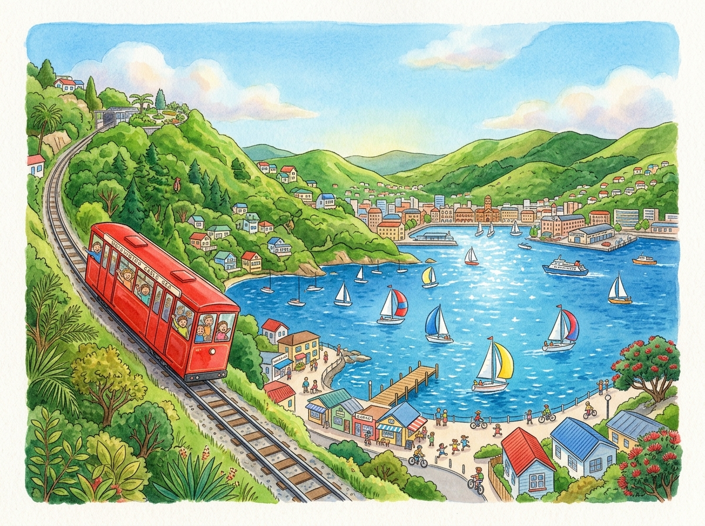
Die Hauptstadt WellingtonWellington ist die Hauptstadt von Neuseeland. Die Stadt liegt am Wasser zwischen grünen Hügeln. Eine alte rote Seilbahn fährt den Berg hinauf. Von oben hat man einen weiten Blick über die Bucht. In Wellington weht oft ein kräftiger Wind.
Grüne Wörter für die AppWellingtonam Wasserrote SeilbahnBlick über die BuchtWind
Der Berg Mount CookDer Mount Cook ist der höchste Berg von Neuseeland. Auf Maori heißt er Aoraki. Ganz oben liegt das ganze Jahr Schnee. Rund um den Berg gibt es große Gletscher aus Eis. Wanderer lieben diese wilde Landschaft.
Grüne Wörter für die AppMount Cookhöchste BergAorakiGletscherWanderer
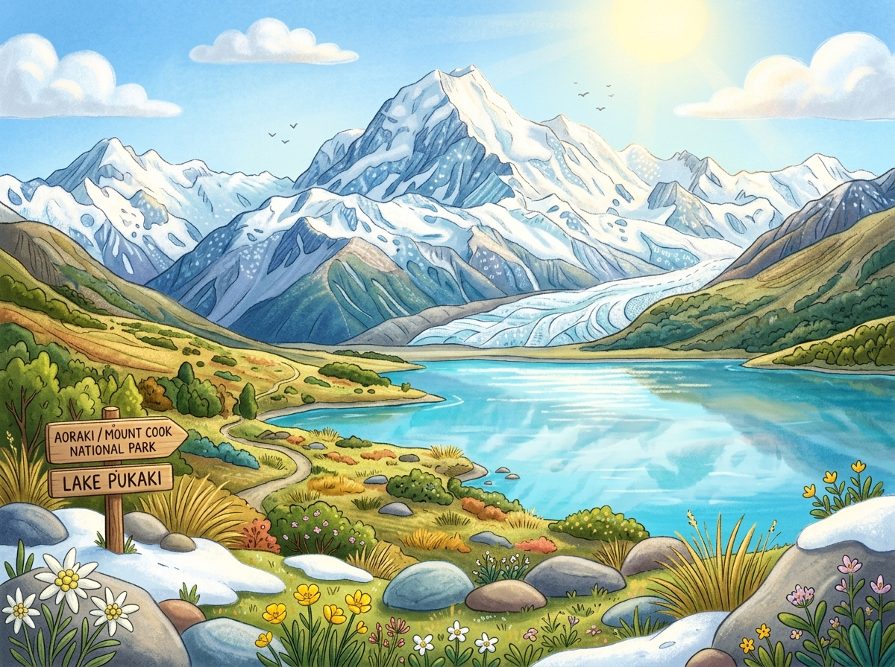
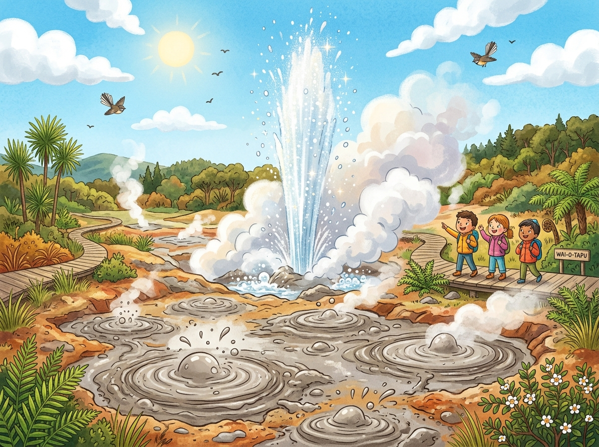
Die heißen Quellen von RotoruaIn Rotorua brodelt heißes Wasser aus der Erde. Überall steigt Dampf aus dem Boden. An manchen Stellen blubbert warmer Schlamm. Es riecht dort ein wenig nach faulen Eiern. Die Maori erzählen viele Geschichten über diesen Ort.
Grüne Wörter für die AppRotoruaheißes WasserDampfwarmer SchlammMaori
Das Land von HobbingenIn Neuseeland wurden große Filme gedreht. Bei Matamata steht das Dorf Hobbingen aus den Filmen. Die kleinen runden Häuser sind in die grünen Hügel gebaut. Viele Besucher kommen, um das Dorf zu sehen. Die Landschaft sieht aus wie im Film.
Grüne Wörter für die AppFilmeHobbingenrunden Häusergrünen HügelLandschaft
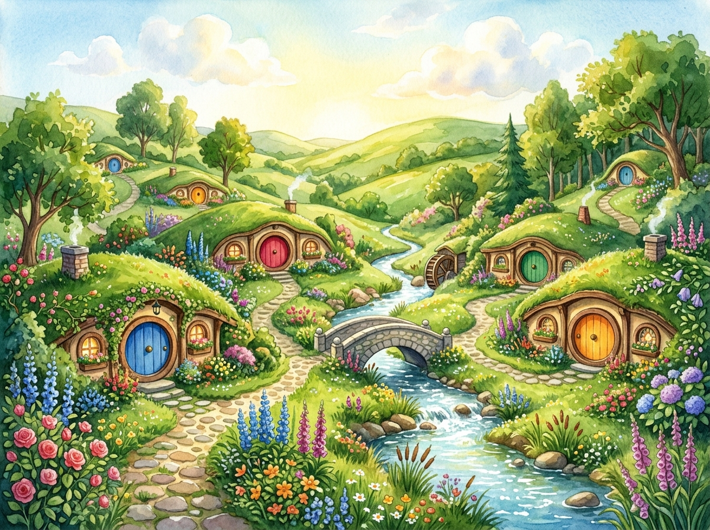
Diese Tiere leben in Neuseeland und sind ganz besonders.
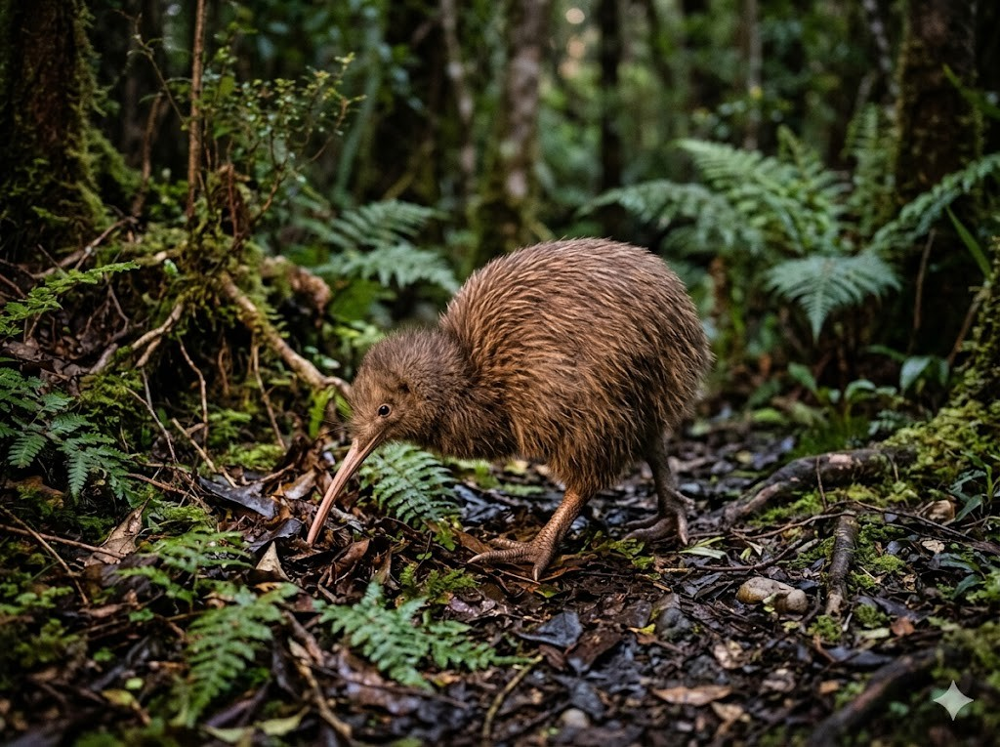
Der KiwiDer Kiwi ist ein kleiner brauner Vogel. Er kann nicht fliegen und hat winzige Flügel. Mit seinem langen Schnabel sucht er nachts nach Würmern. Den ganzen Tag schläft er versteckt im Wald. Der Kiwi ist das Wappentier von Neuseeland.
Grüne Wörter für die AppKiwinicht fliegenlangen SchnabelnachtsWappentier
Das SchafIn Neuseeland leben sehr viele Schafe. Es gibt sogar mehr Schafe als Menschen. Sie grasen auf weiten grünen Wiesen. Aus ihrer Wolle werden warme Pullover gemacht. Die Schafe gehören fest zum Land.
Grüne Wörter für die AppSchafemehr Schafe als Menschengrünen WiesenWollePullover
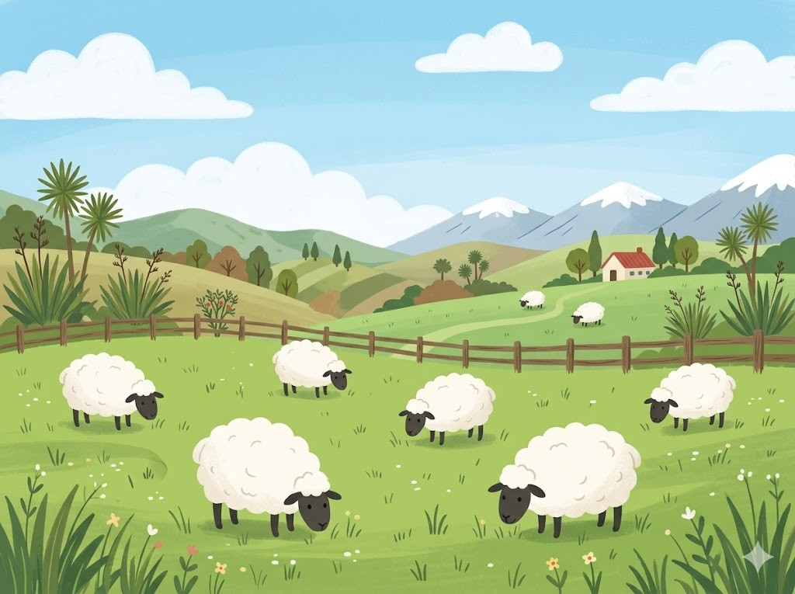
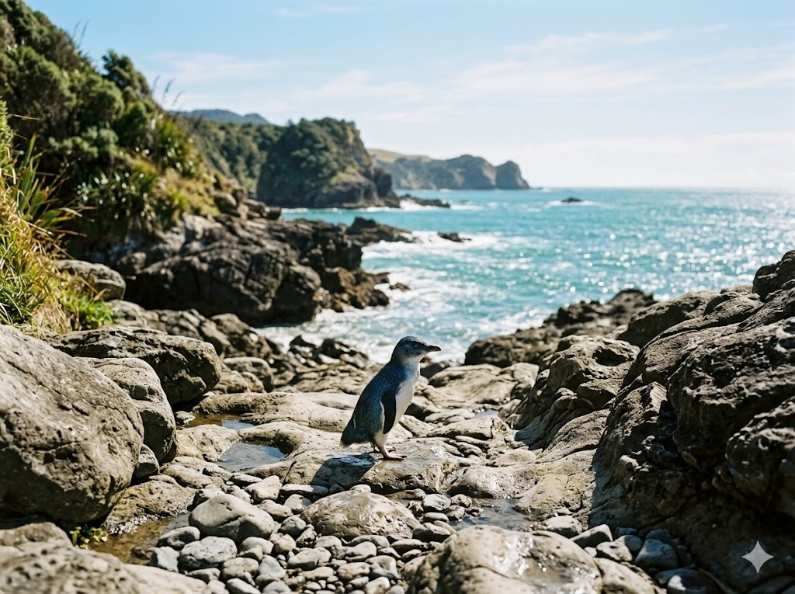
Der PinguinAn den Küsten von Neuseeland leben Pinguine. Manche von ihnen sind besonders klein. An Land watscheln sie langsam über die Steine. Im Wasser aber schwimmen sie sehr schnell. Sie fangen Fische zum Fressen.
Grüne Wörter für die AppPinguinekleinwatschelnschwimmen sie sehr schnellFische
In der App kannst du beim Essen das Foto nehmen oder dein Gericht selbst malen.
HangiHangi ist ein altes Gericht der Maori. Das Essen wird in einer Grube im Boden gegart. Heiße Steine machen alles ganz langsam warm. So werden Fleisch und Gemüse weich und lecker. Es dauert viele Stunden, bis das Essen fertig ist.
Grüne Wörter für die AppHangiMaoriGrube im BodenHeiße SteineFleisch und Gemüse
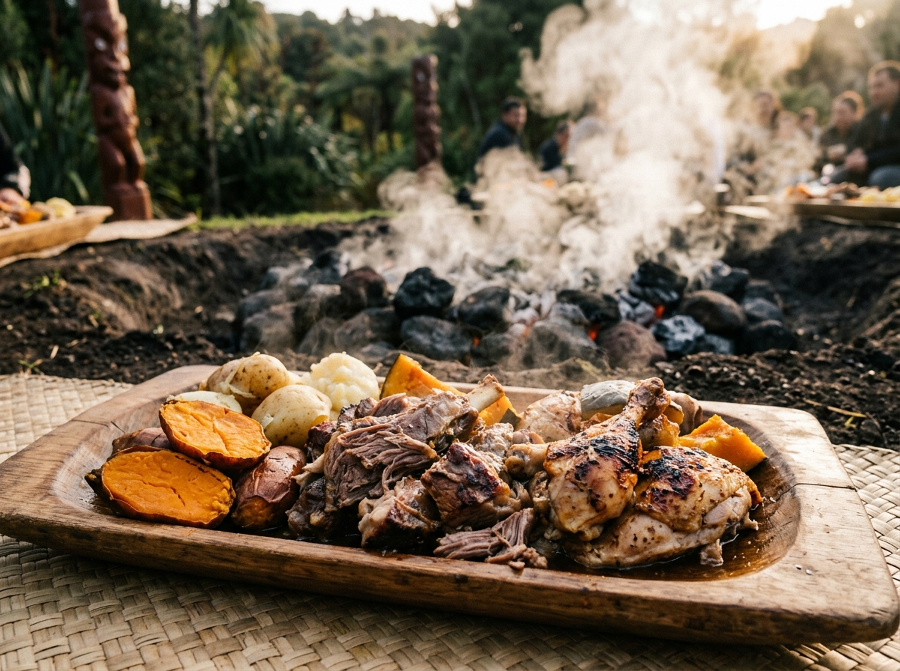
Fish and ChipsFish and Chips kommen aus England. In Neuseeland isst man sie sehr gern. Es gibt gebackenen Fisch mit dicken Pommes. Oft holt man das Essen in einer Tüte. Unten am Strand schmeckt es besonders gut.
Grüne Wörter für die AppFish and ChipsEnglandgebackenen FischPommesam Strand
PavlovaPavlova ist ein süßer Kuchen. Außen ist er fest und innen ganz weich. Obendrauf liegen Sahne und frische Früchte. Oft nimmt man Erdbeeren oder Kiwi-Frucht. Zum Fest essen ihn viele Familien.
Grüne Wörter für die AppPavlovasüßer KuchenSahneFrüchteFest
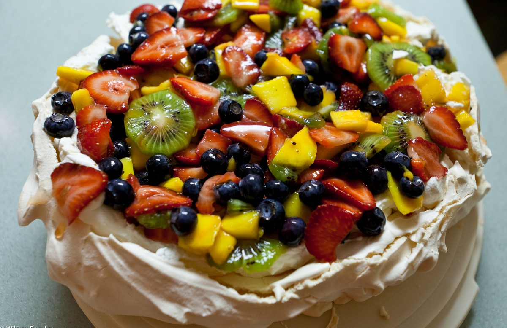
Die Nationalmannschaft von Neuseeland heißt All Whites. Der Name kommt von den ganz weißen Trikots. Neuseeland hat sich für die WM 2026 qualifiziert. Der bekannteste Spieler ist Chris Wood. Er spielt in England bei Nottingham Forest.
Grüne Wörter für die AppAll Whitesweißen TrikotsWM 2026Chris WoodNottingham Forest
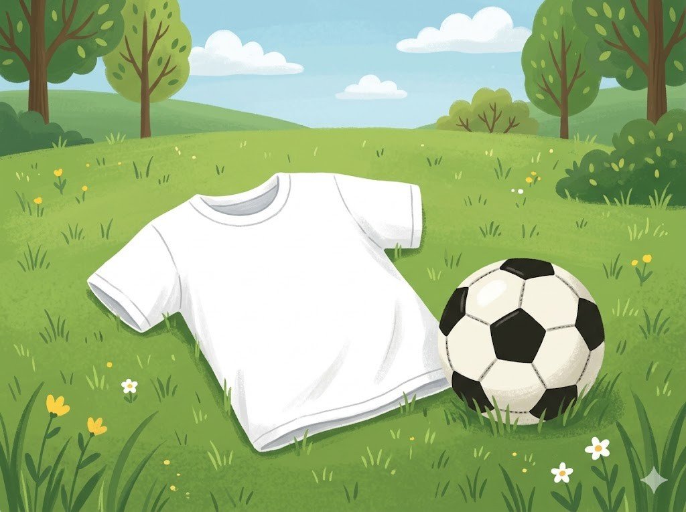
In der SchuleDie Kinder in Neuseeland sprechen Englisch. Viele lernen auch ein paar Wörter Maori. Weil das Land im Süden liegt, sind die Jahreszeiten umgedreht. Im Dezember ist dort Sommer und Schulferien. Viele Kinder gehen oft barfuß zur Schule.
Grüne Wörter für die AppEnglischMaoriJahreszeiten umgedrehtSommerbarfuß
Spiel und FreizeitViele Kinder treiben gern Sport im Freien. Ein beliebtes Spiel ist Rugby mit dem Ball. Andere gehen ans Meer und lernen surfen. Auch Wandern in den Bergen macht Spaß. Das Wetter ist mild und das Land ist grün.
Grüne Wörter für die AppSport im FreienRugbysurfenWanderngrün
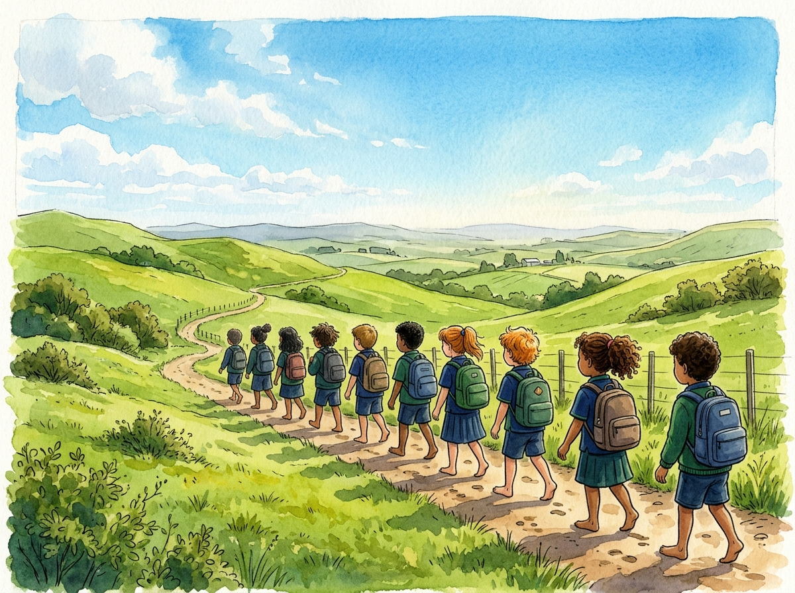